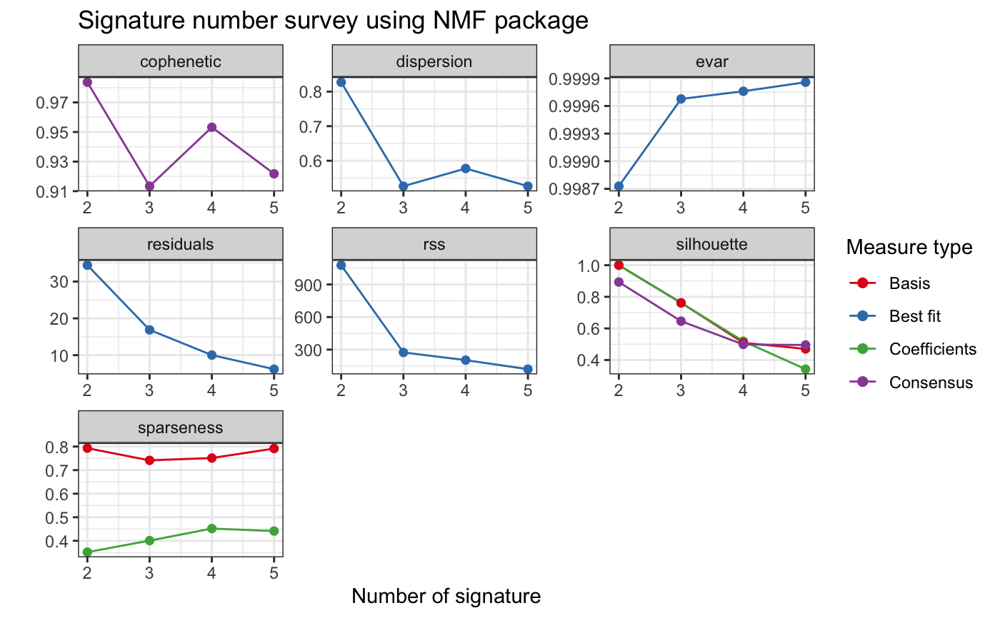
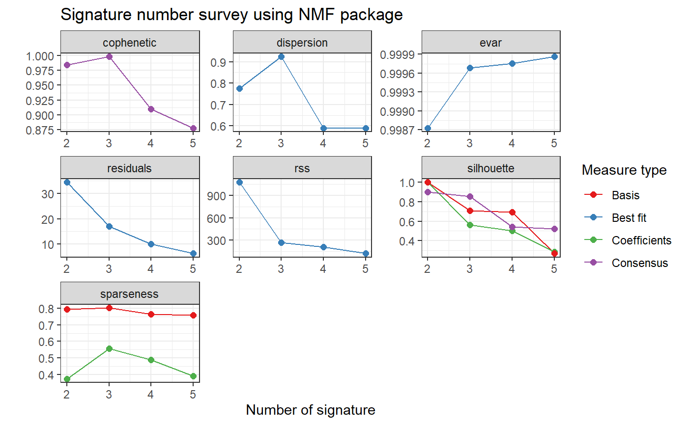
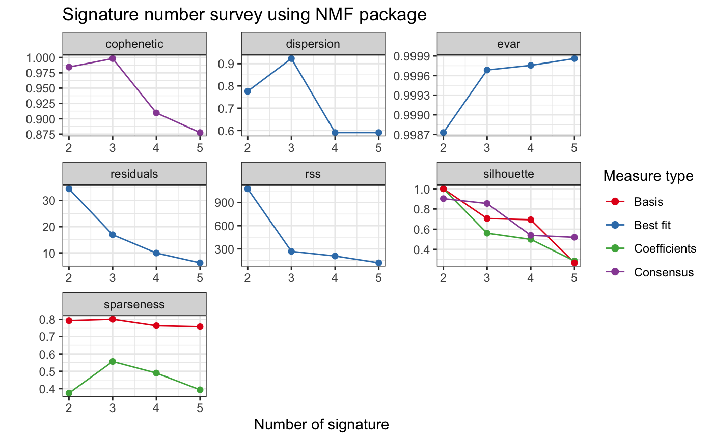
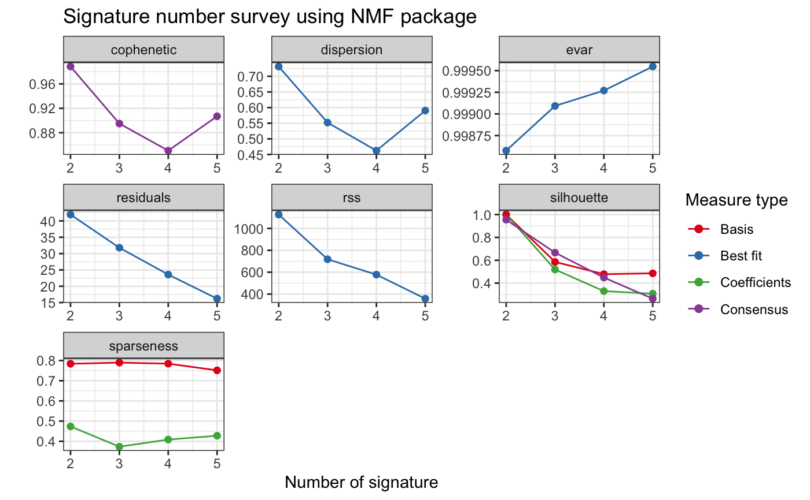
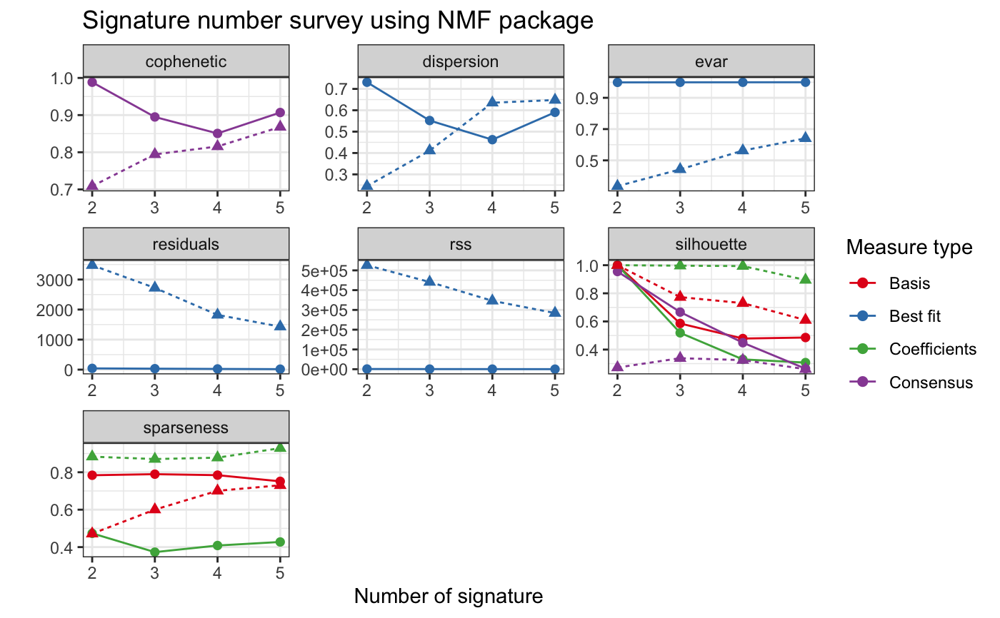

R/show_sig_number_survey2.R
show_sig_number_survey2.RdThis function is modified from NMF package to better help users to explore survey of signature number.
show_sig_number_survey2( x, y = NULL, what = c("all", "cophenetic", "rss", "residuals", "dispersion", "evar", "sparseness", "sparseness.basis", "sparseness.coef", "silhouette", "silhouette.coef", "silhouette.basis", "silhouette.consensus"), na.rm = FALSE, xlab = "Number of signature", ylab = "", main = "Signature number survey using NMF package" )
| x | a |
|---|---|
| y | for random simulation,
a |
| what | a |
| na.rm | single logical that specifies if the rank
for which the measures are NA values should be removed
from the graph or not (default to |
| xlab | x-axis label |
| ylab | y-axis label |
| main | main title |
a ggplot object
# \donttest{ # Load copy number prepare object load(system.file("extdata", "toy_copynumber_prepare.RData", package = "sigminer", mustWork = TRUE )) library(NMF) cn_estimate <- sig_estimate(cn_prepare$nmf_matrix, cores = 1, nrun = 5, verbose = TRUE, keep_nmfObj = TRUE )#> Compute NMF rank= 2 ... + measures ... OK #> Compute NMF rank= 3 ... + measures ... OK #> Compute NMF rank= 4 ... + measures ... OK #> Compute NMF rank= 5 ... + measures ... OK#>#> method seed rng metric rank sparseness.basis sparseness.coef rss #> 2 brunet random 2 KL 2 0.7839578 0.4736241 1126.9257 #> 3 brunet random 3 KL 3 0.7897303 0.3731868 718.3352 #> 4 brunet random 2 KL 4 0.7844243 0.4085115 577.7867 #> 5 brunet random 1 KL 5 0.7514582 0.4274734 358.1283 #> evar silhouette.coef silhouette.basis residuals niter cpu cpu.all nrun #> 2 0.9985760 1.0000000 1.0000000 41.95157 760 0.039 2.253 5 #> 3 0.9990923 0.5189828 0.5855884 31.80088 510 0.032 2.124 5 #> 4 0.9992699 0.3301537 0.4784382 23.57932 1300 0.070 2.115 5 #> 5 0.9995475 0.3075000 0.4856586 16.20087 1130 0.057 2.128 5 #> cophenetic dispersion silhouette.consensus #> 2 0.9884538 0.7312 0.9550000 #> 3 0.8949770 0.5520 0.6665284 #> 4 0.8506596 0.4624 0.4489177 #> 5 0.9069709 0.5904 0.2640657#>#> Compute NMF rank= 2 ... + measures ... OK #> Compute NMF rank= 3 ... + measures ... OK #> Compute NMF rank= 4 ... + measures ... OK #> Compute NMF rank= 5 ... + measures ... OK#>#> method seed rng metric rank sparseness.basis sparseness.coef rss #> 2 brunet random 3 KL 2 0.4716159 0.8833418 526172.3 #> 3 brunet random 1 KL 3 0.6004268 0.8705534 441121.9 #> 4 brunet random 1 KL 4 0.7008686 0.8779935 346139.9 #> 5 brunet random 2 KL 5 0.7303538 0.9286542 284034.0 #> evar silhouette.coef silhouette.basis residuals niter cpu cpu.all nrun #> 2 0.3351181 1.0000000 1.0000000 3476.798 430 0.025 2.129 5 #> 3 0.4425896 0.9965424 0.7730195 2721.423 420 0.039 2.356 5 #> 4 0.5626106 0.9937730 0.7302663 1822.651 420 0.023 2.067 5 #> 5 0.6410890 0.8949947 0.6097784 1431.300 440 0.022 2.145 5 #> cophenetic dispersion silhouette.consensus #> 2 0.7087251 0.2448 0.2722640 #> 3 0.7942898 0.4112 0.3386830 #> 4 0.8156188 0.6352 0.3250000 #> 5 0.8680849 0.6480 0.2607143# Show from data.frame obtained by sig_estimate() show_sig_number_survey2(cn_estimate$survey)show_sig_number_survey2(cn_estimate$survey, y = cn_estimate$survey.random)# Show directly from NMF.rank object show_sig_number_survey2(cn_estimate$nmfEstimate)show_sig_number_survey2(cn_estimate$nmfEstimate, y = cn_estimate$nmfEstimate.random)# }